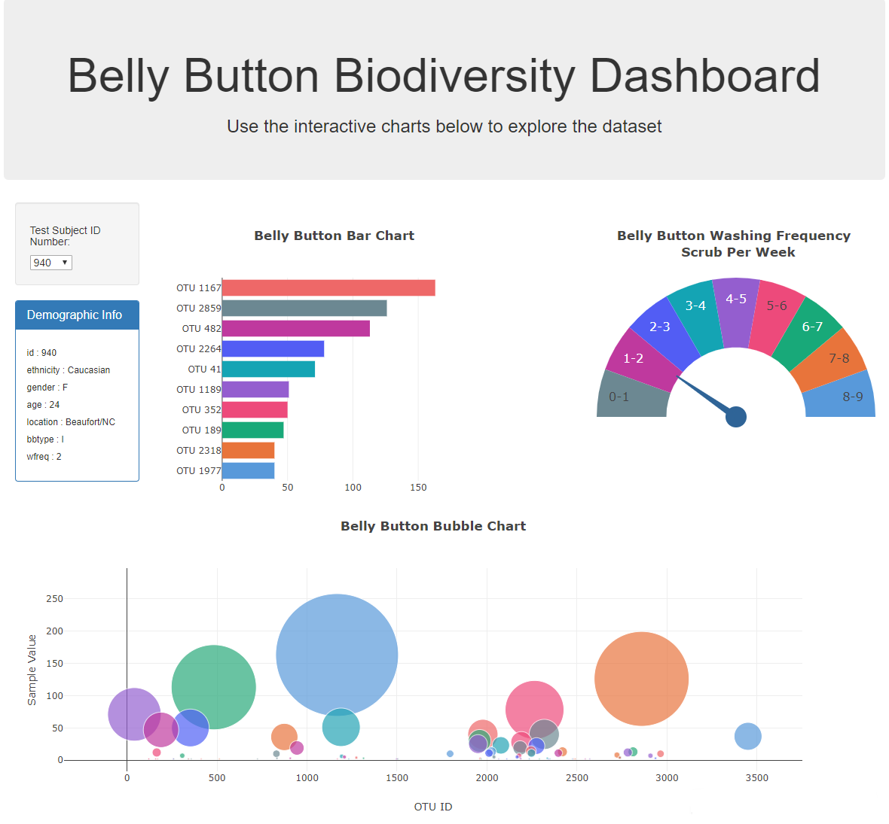

Interactive Web Data Visualization
A data visualization that explores the microbes that colonize human navels.
In other words, your belly button.

Set up
In this project, I built an interactive dashboard to explore the Belly Button
Biodiversity dataset, which catalogs the microbes that colonize human navels.
The dataset reveals that a small handful of microbial species (also called
operational taxonomic units, or OTUs, in the study) were present in more than
70% of people, while the rest were relatively rare.
1) Plot.ly
- Use the D3 library to read in samples.json.
- Create a horizontal bar chart with a dropdown menu to display the top 10 OTUs found in that individual.
- Use sample_values as the values for the bar chart.
- Use otu_ids as the labels for the bar chart.
- Use otu_labels as the hovertext for the chart.
- Create a bubble chart that displays each sample.
- Use otu_ids for the x values.
- Use sample_values for the y values.
- Use sample_values for the marker size.
- Use otu_ids for the marker colors.
- Use otu_labels for the text values.
- Display the sample metadata, i.e., an individual's demographic information.
- Display each key-value pair from the metadata JSON object somewhere on the page.
- Update all of the plots any time that a new sample is selected. Additionally, I created a layout for my dashboard: 

2) Additional Plot
- I adapted the Gauge Chart from Plot.ly to plot the weekly washing frequency of the individual.
- Next, I modifed the example gauge code to account for values ranging from 0 through 9.
- Update the chart whenever a new sample is selected.
3) Deployment
I deployed my app to a free static page hosting service, GitHub Pages.